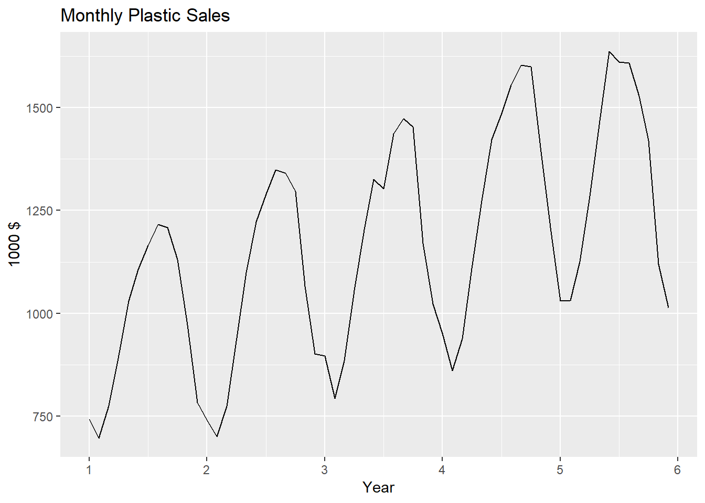
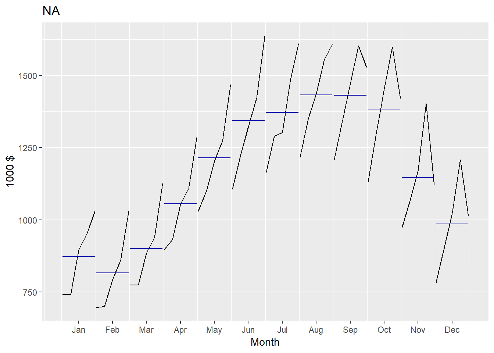
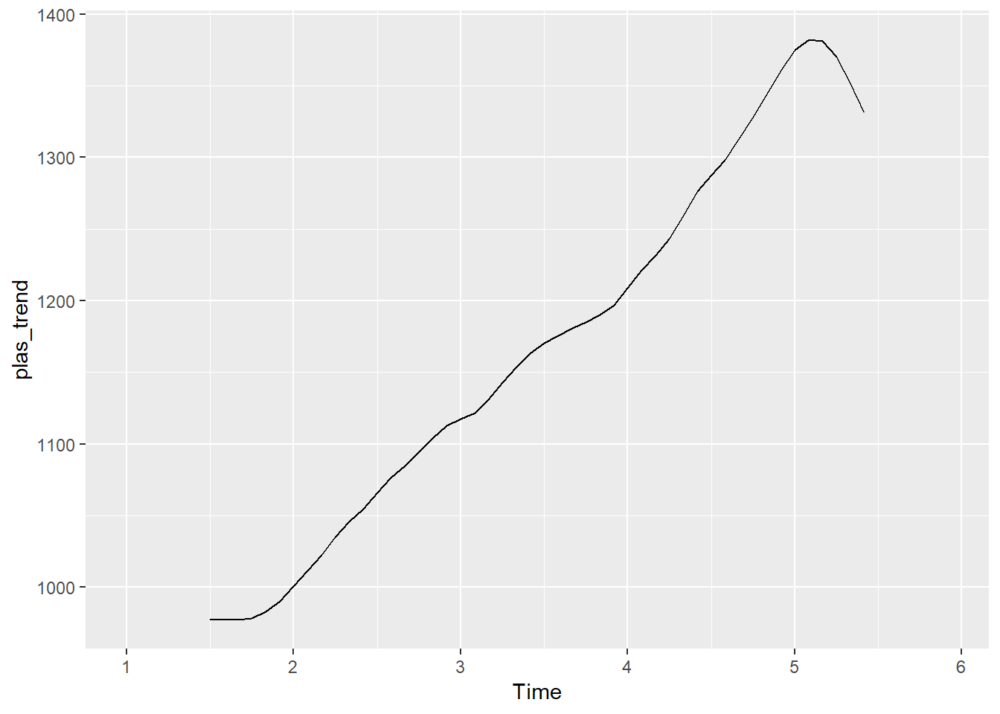
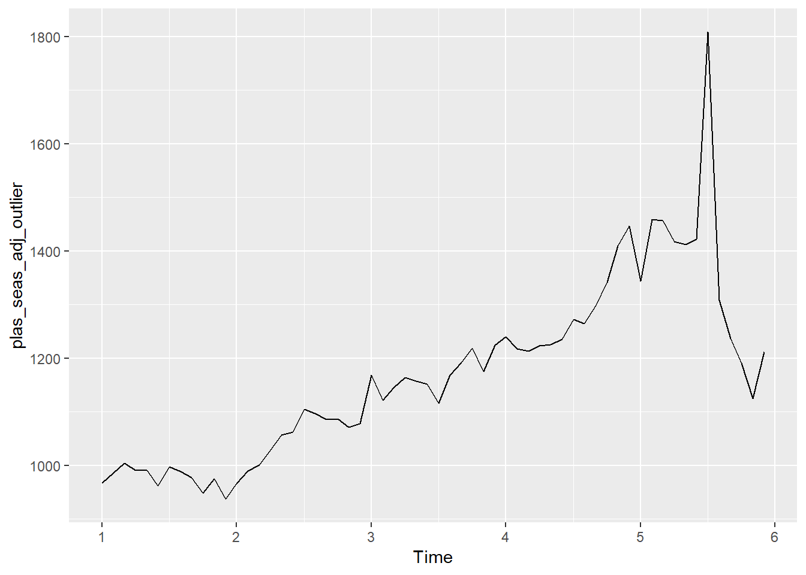
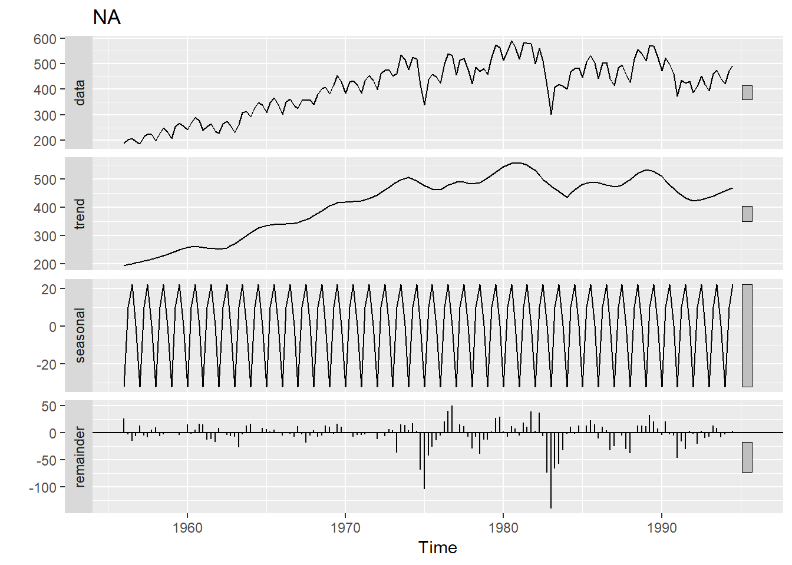
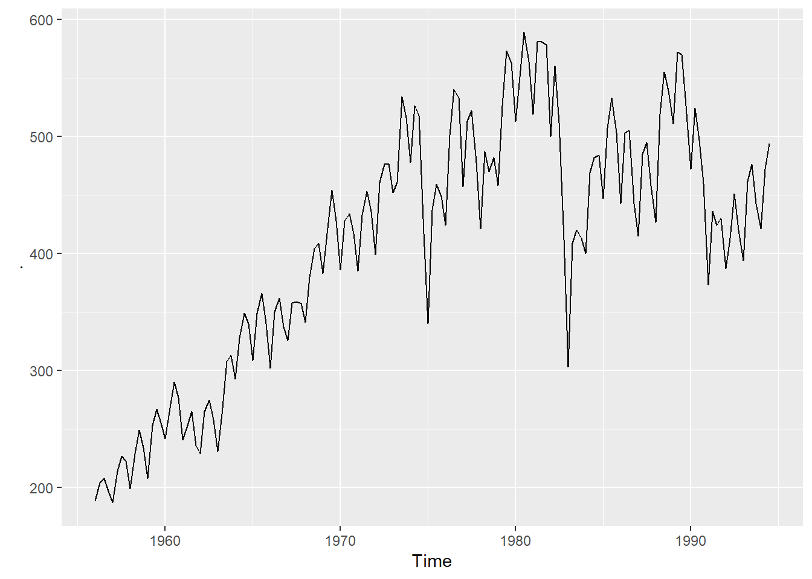
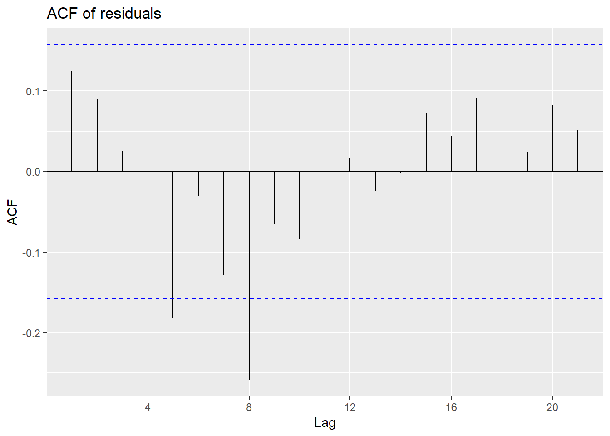
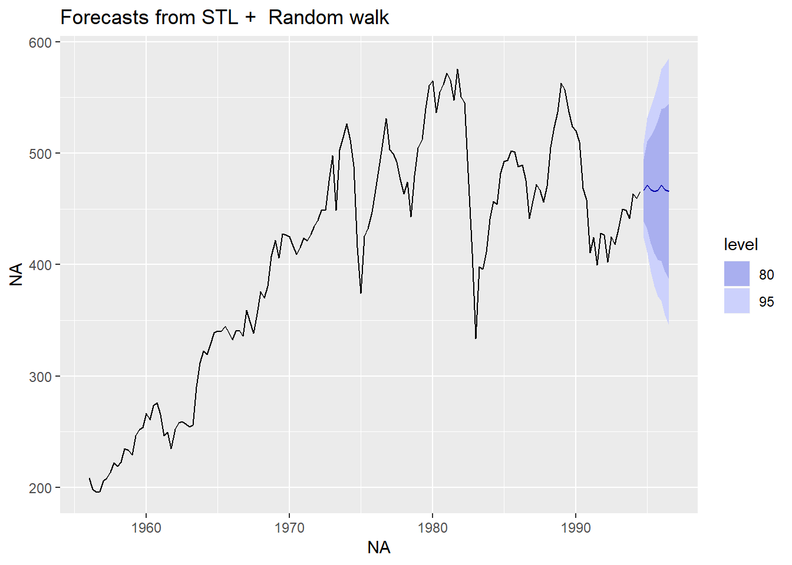

Chapter 3 HW2
3.1 6.2

3.1.1 a

autoplot(plastics) + xlab("Month") + ylab("1000 $") +
ggtitle("Monthly Plastic Sales")
The data has approximately 1 month (peak to peak) seasonality and an apprearent upward trend, that may be cyclic behavior since this only covers 6 months of data.
3.1.2 b

plastics## Jan Feb Mar Apr May Jun Jul Aug Sep Oct Nov Dec
## 1 742 697 776 898 1030 1107 1165 1216 1208 1131 971 783
## 2 741 700 774 932 1099 1223 1290 1349 1341 1296 1066 901
## 3 896 793 885 1055 1204 1326 1303 1436 1473 1453 1170 1023
## 4 951 861 938 1109 1274 1422 1486 1555 1604 1600 1403 1209
## 5 1030 1032 1126 1285 1468 1637 1611 1608 1528 1420 1119 1013autoplot(plastics)
plas_trend <- ma(plastics, order = 12, centre = TRUE)
plas_trend## Jan Feb Mar Apr May Jun Jul
## 1 NA NA NA NA NA NA 976.9583
## 2 1000.4583 1011.2083 1022.2917 1034.7083 1045.5417 1054.4167 1065.7917
## 3 1117.3750 1121.5417 1130.6667 1142.7083 1153.5833 1163.0000 1170.3750
## 4 1208.7083 1221.2917 1231.7083 1243.2917 1259.1250 1276.5833 1287.6250
## 5 1374.7917 1382.2083 1381.2500 1370.5833 1351.2500 1331.2500 NA
## Aug Sep Oct Nov Dec
## 1 977.0417 977.0833 978.4167 982.7083 990.4167
## 2 1076.1250 1084.6250 1094.3750 1103.8750 1112.5417
## 3 1175.5000 1180.5417 1185.0000 1190.1667 1197.0833
## 4 1298.0417 1313.0000 1328.1667 1343.5833 1360.6250
## 5 NA NA NA NA NAautoplot(plas_trend)
plas_detrend <- plastics/plas_trend
plas_detrend## Jan Feb Mar Apr May Jun Jul
## 1 NA NA NA NA NA NA 1.1924766
## 2 0.7406605 0.6922411 0.7571225 0.9007369 1.0511298 1.1598830 1.2103679
## 3 0.8018794 0.7070625 0.7827241 0.9232452 1.0437044 1.1401548 1.1133184
## 4 0.7867903 0.7049913 0.7615439 0.8919870 1.0118138 1.1139108 1.1540627
## 5 0.7492044 0.7466313 0.8152036 0.9375570 1.0864015 1.2296714 NA
## Aug Sep Oct Nov Dec
## 1 1.2445733 1.2363326 1.1559492 0.9880856 0.7905764
## 2 1.2535718 1.2363720 1.1842376 0.9656890 0.8098573
## 3 1.2216078 1.2477323 1.2261603 0.9830556 0.8545771
## 4 1.1979585 1.2216299 1.2046681 1.0442225 0.8885622
## 5 NA NA NA NA NAplas_seas <- colMeans(t(matrix(plas_detrend,nrow = 12)), na.rm = TRUE)
plas_seas## [1] 0.7696337 0.7127315 0.7791485 0.9133815 1.0482624 1.1609050 1.1675564
## [8] 1.2294279 1.2355167 1.1927538 0.9952632 0.8358933autoplot(as.ts(plas_seas))
random_plas = plastics/ (plas_trend* plas_seas)
(random_plas)## Jan Feb Mar Apr May Jun Jul
## 1 NA NA NA NA NA NA 1.0213439
## 2 0.9623546 0.9712509 0.9717306 0.9861563 1.0027354 0.9991197 1.0366676
## 3 1.0418975 0.9920460 1.0045890 1.0107991 0.9956519 0.9821258 0.9535457
## 4 1.0222920 0.9891400 0.9774053 0.9765766 0.9652295 0.9595194 0.9884428
## 5 0.9734559 1.0475631 1.0462750 1.0264681 1.0363832 1.0592351 NA
## Aug Sep Oct Nov Dec
## 1 1.0123191 1.0006604 0.9691432 0.9927883 0.9457863
## 2 1.0196384 1.0006923 0.9928600 0.9702851 0.9688526
## 3 0.9936393 1.0098871 1.0280079 0.9877343 1.0223520
## 4 0.9744032 0.9887603 1.0099889 1.0491923 1.0630092
## 5 NA NA NA NA NArandom_plas## Jan Feb Mar Apr May Jun Jul
## 1 NA NA NA NA NA NA 1.0213439
## 2 0.9623546 0.9712509 0.9717306 0.9861563 1.0027354 0.9991197 1.0366676
## 3 1.0418975 0.9920460 1.0045890 1.0107991 0.9956519 0.9821258 0.9535457
## 4 1.0222920 0.9891400 0.9774053 0.9765766 0.9652295 0.9595194 0.9884428
## 5 0.9734559 1.0475631 1.0462750 1.0264681 1.0363832 1.0592351 NA
## Aug Sep Oct Nov Dec
## 1 1.0123191 1.0006604 0.9691432 0.9927883 0.9457863
## 2 1.0196384 1.0006923 0.9928600 0.9702851 0.9688526
## 3 0.9936393 1.0098871 1.0280079 0.9877343 1.0223520
## 4 0.9744032 0.9887603 1.0099889 1.0491923 1.0630092
## 5 NA NA NA NA NAplastics %>% decompose(type="multiplicative") %>%
autoplot() + xlab("Month") +
ggtitle("Classical multiplicative decomposition
of Plastic Sales")
plastics %>% decompose(type="multiplicative")## $x
## Jan Feb Mar Apr May Jun Jul Aug Sep Oct Nov Dec
## 1 742 697 776 898 1030 1107 1165 1216 1208 1131 971 783
## 2 741 700 774 932 1099 1223 1290 1349 1341 1296 1066 901
## 3 896 793 885 1055 1204 1326 1303 1436 1473 1453 1170 1023
## 4 951 861 938 1109 1274 1422 1486 1555 1604 1600 1403 1209
## 5 1030 1032 1126 1285 1468 1637 1611 1608 1528 1420 1119 1013
##
## $seasonal
## Jan Feb Mar Apr May Jun Jul
## 1 0.7670466 0.7103357 0.7765294 0.9103112 1.0447386 1.1570026 1.1636317
## 2 0.7670466 0.7103357 0.7765294 0.9103112 1.0447386 1.1570026 1.1636317
## 3 0.7670466 0.7103357 0.7765294 0.9103112 1.0447386 1.1570026 1.1636317
## 4 0.7670466 0.7103357 0.7765294 0.9103112 1.0447386 1.1570026 1.1636317
## 5 0.7670466 0.7103357 0.7765294 0.9103112 1.0447386 1.1570026 1.1636317
## Aug Sep Oct Nov Dec
## 1 1.2252952 1.2313635 1.1887444 0.9919176 0.8330834
## 2 1.2252952 1.2313635 1.1887444 0.9919176 0.8330834
## 3 1.2252952 1.2313635 1.1887444 0.9919176 0.8330834
## 4 1.2252952 1.2313635 1.1887444 0.9919176 0.8330834
## 5 1.2252952 1.2313635 1.1887444 0.9919176 0.8330834
##
## $trend
## Jan Feb Mar Apr May Jun Jul
## 1 NA NA NA NA NA NA 976.9583
## 2 1000.4583 1011.2083 1022.2917 1034.7083 1045.5417 1054.4167 1065.7917
## 3 1117.3750 1121.5417 1130.6667 1142.7083 1153.5833 1163.0000 1170.3750
## 4 1208.7083 1221.2917 1231.7083 1243.2917 1259.1250 1276.5833 1287.6250
## 5 1374.7917 1382.2083 1381.2500 1370.5833 1351.2500 1331.2500 NA
## Aug Sep Oct Nov Dec
## 1 977.0417 977.0833 978.4167 982.7083 990.4167
## 2 1076.1250 1084.6250 1094.3750 1103.8750 1112.5417
## 3 1175.5000 1180.5417 1185.0000 1190.1667 1197.0833
## 4 1298.0417 1313.0000 1328.1667 1343.5833 1360.6250
## 5 NA NA NA NA NA
##
## $random
## Jan Feb Mar Apr May Jun Jul
## 1 NA NA NA NA NA NA 1.0247887
## 2 0.9656005 0.9745267 0.9750081 0.9894824 1.0061175 1.0024895 1.0401641
## 3 1.0454117 0.9953920 1.0079773 1.0142083 0.9990100 0.9854384 0.9567618
## 4 1.0257400 0.9924762 0.9807020 0.9798704 0.9684851 0.9627557 0.9917766
## 5 0.9767392 1.0510964 1.0498039 1.0299302 1.0398787 1.0628077 NA
## Aug Sep Oct Nov Dec
## 1 1.0157335 1.0040354 0.9724119 0.9961368 0.9489762
## 2 1.0230774 1.0040674 0.9962088 0.9735577 0.9721203
## 3 0.9969907 1.0132932 1.0314752 0.9910657 1.0258002
## 4 0.9776897 0.9920952 1.0133954 1.0527311 1.0665946
## 5 NA NA NA NA NA
##
## $figure
## [1] 0.7670466 0.7103357 0.7765294 0.9103112 1.0447386 1.1570026 1.1636317
## [8] 1.2252952 1.2313635 1.1887444 0.9919176 0.8330834
##
## $type
## [1] "multiplicative"
##
## attr(,"class")
## [1] "decomposed.ts"3.1.3 c

Yes the trend is sloped upward and the seasonal trend reaches maximum once a month.
3.1.4 d

plas_seas <- decompose(plastics, type = 'multiplicative')$seasonal
plas_seas## Jan Feb Mar Apr May Jun Jul
## 1 0.7670466 0.7103357 0.7765294 0.9103112 1.0447386 1.1570026 1.1636317
## 2 0.7670466 0.7103357 0.7765294 0.9103112 1.0447386 1.1570026 1.1636317
## 3 0.7670466 0.7103357 0.7765294 0.9103112 1.0447386 1.1570026 1.1636317
## 4 0.7670466 0.7103357 0.7765294 0.9103112 1.0447386 1.1570026 1.1636317
## 5 0.7670466 0.7103357 0.7765294 0.9103112 1.0447386 1.1570026 1.1636317
## Aug Sep Oct Nov Dec
## 1 1.2252952 1.2313635 1.1887444 0.9919176 0.8330834
## 2 1.2252952 1.2313635 1.1887444 0.9919176 0.8330834
## 3 1.2252952 1.2313635 1.1887444 0.9919176 0.8330834
## 4 1.2252952 1.2313635 1.1887444 0.9919176 0.8330834
## 5 1.2252952 1.2313635 1.1887444 0.9919176 0.8330834plas_seas_adj = plastics/plas_seas
autoplot(plas_seas_adj)
3.1.5 e

plastics[30]## [1] 1326new_val <- plastics[30]+500
plas_outlier <- replace(plastics,30, new_val)
plas_outlier[30]## [1] 1826plas_seas_outlier <- decompose(plas_outlier, type = 'multiplicative')$seasonal
plas_seas_outlier## Jan Feb Mar Apr May Jun Jul
## 1 0.7598996 0.7040581 0.7696340 0.9022607 1.0357218 1.2506498 1.1541497
## 2 0.7598996 0.7040581 0.7696340 0.9022607 1.0357218 1.2506498 1.1541497
## 3 0.7598996 0.7040581 0.7696340 0.9022607 1.0357218 1.2506498 1.1541497
## 4 0.7598996 0.7040581 0.7696340 0.9022607 1.0357218 1.2506498 1.1541497
## 5 0.7598996 0.7040581 0.7696340 0.9022607 1.0357218 1.2506498 1.1541497
## Aug Sep Oct Nov Dec
## 1 1.2149325 1.2208222 1.1784222 0.9836787 0.8257707
## 2 1.2149325 1.2208222 1.1784222 0.9836787 0.8257707
## 3 1.2149325 1.2208222 1.1784222 0.9836787 0.8257707
## 4 1.2149325 1.2208222 1.1784222 0.9836787 0.8257707
## 5 1.2149325 1.2208222 1.1784222 0.9836787 0.8257707plas_seas_adj_outlier = plas_outlier/plas_seas_outlier
autoplot(plas_seas_adj_outlier)
It adds a spike to the seasonally adjusted data where the outlier is.
3.1.6 f

plastics[5]## [1] 1030new_val <- plastics[5]+500
plas_outlier <- replace(plastics,5, new_val)
plas_outlier[5]## [1] 1530plas_seas_outlier <- decompose(plas_outlier, type = 'multiplicative')$seasonal
plas_seas_outlier## Jan Feb Mar Apr May Jun Jul
## 1 0.7705339 0.7135653 0.7800599 0.9144500 1.0494886 1.1622630 1.1567134
## 2 0.7705339 0.7135653 0.7800599 0.9144500 1.0494886 1.1622630 1.1567134
## 3 0.7705339 0.7135653 0.7800599 0.9144500 1.0494886 1.1622630 1.1567134
## 4 0.7705339 0.7135653 0.7800599 0.9144500 1.0494886 1.1622630 1.1567134
## 5 0.7705339 0.7135653 0.7800599 0.9144500 1.0494886 1.1622630 1.1567134
## Aug Sep Oct Nov Dec
## 1 1.2181249 1.2243057 1.1823311 0.9912933 0.8368710
## 2 1.2181249 1.2243057 1.1823311 0.9912933 0.8368710
## 3 1.2181249 1.2243057 1.1823311 0.9912933 0.8368710
## 4 1.2181249 1.2243057 1.1823311 0.9912933 0.8368710
## 5 1.2181249 1.2243057 1.1823311 0.9912933 0.8368710plas_seas_adj_outlier = plas_outlier/plas_seas_outlier
autoplot(plas_seas_adj_outlier)
plastics[55]## [1] 1611new_val <- plastics[55]+500
plas_outlier <- replace(plastics,55, new_val)
plas_outlier[55]## [1] 2111plas_seas_outlier <- decompose(plas_outlier, type = 'multiplicative')$seasonal
plas_seas_outlier## Jan Feb Mar Apr May Jun Jul
## 1 0.7667177 0.7071587 0.7730597 0.9063243 1.0399751 1.1513949 1.1673737
## 2 0.7667177 0.7071587 0.7730597 0.9063243 1.0399751 1.1513949 1.1673737
## 3 0.7667177 0.7071587 0.7730597 0.9063243 1.0399751 1.1513949 1.1673737
## 4 0.7667177 0.7071587 0.7730597 0.9063243 1.0399751 1.1513949 1.1673737
## 5 0.7667177 0.7071587 0.7730597 0.9063243 1.0399751 1.1513949 1.1673737
## Aug Sep Oct Nov Dec
## 1 1.2292355 1.2353233 1.1925671 0.9951074 0.8357624
## 2 1.2292355 1.2353233 1.1925671 0.9951074 0.8357624
## 3 1.2292355 1.2353233 1.1925671 0.9951074 0.8357624
## 4 1.2292355 1.2353233 1.1925671 0.9951074 0.8357624
## 5 1.2292355 1.2353233 1.1925671 0.9951074 0.8357624plas_seas_adj_outlier = plas_outlier/plas_seas_outlier
autoplot(plas_seas_adj_outlier)
Yes, the spike occurs where the outlier is.
3.2 6.6

3.2.1 a

bricksq %>% autoplot()
bricksq %>%
stl(t.window=13, s.window="periodic", robust=TRUE) %>%
autoplot()
bricksq %>%
stl(t.window=13, s.window=7, robust=TRUE) %>%
autoplot()
bricksq %>%
stl(t.window=13, s.window=25, robust=TRUE) %>%
autoplot()
bricksq %>%
stl(t.window=13, s.window=81, robust=TRUE) %>%
autoplot()
We see that a high s.window yeilds the same as periodic.
bricksq %>% autoplot()
bricksq %>%
stl(t.window=13, s.window="periodic", robust=TRUE) %>%
autoplot()
bricksq %>%
stl(t.window=25, s.window="periodic", robust=TRUE) %>%
autoplot()
bricksq %>%
stl(t.window=7, s.window="periodic", robust=TRUE) %>%
autoplot()
bricksq %>%
stl(t.window=3, s.window="periodic", robust=TRUE) %>%
autoplot()
The t.window parameter adjusts the goodness of fit of the trend, low values tend to under fit the trend, and high values tend to over fit the trend.
3.2.2 b

brick_seas <- decompose(bricksq, type = 'multiplicative')$seasonal
brick_seas## Qtr1 Qtr2 Qtr3 Qtr4
## 1956 0.907788 1.027191 1.061155 1.003866
## 1957 0.907788 1.027191 1.061155 1.003866
## 1958 0.907788 1.027191 1.061155 1.003866
## 1959 0.907788 1.027191 1.061155 1.003866
## 1960 0.907788 1.027191 1.061155 1.003866
## 1961 0.907788 1.027191 1.061155 1.003866
## 1962 0.907788 1.027191 1.061155 1.003866
## 1963 0.907788 1.027191 1.061155 1.003866
## 1964 0.907788 1.027191 1.061155 1.003866
## 1965 0.907788 1.027191 1.061155 1.003866
## 1966 0.907788 1.027191 1.061155 1.003866
## 1967 0.907788 1.027191 1.061155 1.003866
## 1968 0.907788 1.027191 1.061155 1.003866
## 1969 0.907788 1.027191 1.061155 1.003866
## 1970 0.907788 1.027191 1.061155 1.003866
## 1971 0.907788 1.027191 1.061155 1.003866
## 1972 0.907788 1.027191 1.061155 1.003866
## 1973 0.907788 1.027191 1.061155 1.003866
## 1974 0.907788 1.027191 1.061155 1.003866
## 1975 0.907788 1.027191 1.061155 1.003866
## 1976 0.907788 1.027191 1.061155 1.003866
## 1977 0.907788 1.027191 1.061155 1.003866
## 1978 0.907788 1.027191 1.061155 1.003866
## 1979 0.907788 1.027191 1.061155 1.003866
## 1980 0.907788 1.027191 1.061155 1.003866
## 1981 0.907788 1.027191 1.061155 1.003866
## 1982 0.907788 1.027191 1.061155 1.003866
## 1983 0.907788 1.027191 1.061155 1.003866
## 1984 0.907788 1.027191 1.061155 1.003866
## 1985 0.907788 1.027191 1.061155 1.003866
## 1986 0.907788 1.027191 1.061155 1.003866
## 1987 0.907788 1.027191 1.061155 1.003866
## 1988 0.907788 1.027191 1.061155 1.003866
## 1989 0.907788 1.027191 1.061155 1.003866
## 1990 0.907788 1.027191 1.061155 1.003866
## 1991 0.907788 1.027191 1.061155 1.003866
## 1992 0.907788 1.027191 1.061155 1.003866
## 1993 0.907788 1.027191 1.061155 1.003866
## 1994 0.907788 1.027191 1.061155brick_seas_adj = bricksq/brick_seas
autoplot(brick_seas_adj)
3.2.3 c

brick_naive <- naive(brick_seas_adj, h=12)
brick_naive## Point Forecast Lo 80 Hi 80 Lo 95 Hi 95
## 1994 Q4 465.5304 438.0189 493.0419 423.4551 507.6056
## 1995 Q1 465.5304 426.6232 504.4375 406.0270 525.0337
## 1995 Q2 465.5304 417.8790 513.1817 392.6539 538.4068
## 1995 Q3 465.5304 410.5073 520.5534 381.3799 549.6808
## 1995 Q4 465.5304 404.0128 527.0480 371.4473 559.6134
## 1996 Q1 465.5304 398.1412 532.9195 362.4675 568.5932
## 1996 Q2 465.5304 392.7417 538.3190 354.2098 576.8509
## 1996 Q3 465.5304 387.7161 543.3447 346.5237 584.5371
## 1996 Q4 465.5304 382.9958 548.0649 339.3047 591.7560
## 1997 Q1 465.5304 378.5313 552.5294 332.4768 598.5839
## 1997 Q2 465.5304 374.2850 556.7757 325.9826 605.0781
## 1997 Q3 465.5304 370.2277 560.8330 319.7775 611.2832autoplot(brick_seas_adj) +
autolayer(brick_naive,
series="Naïve", PI=TRUE)
3.2.4 d

fcast <- stlf(brick_seas_adj, method='naive')
autoplot(fcast)
3.2.5 e

res_brk <- residuals(brick_naive)
autoplot(res_brk)gghistogram(res_brk) + ggtitle("Histogram of residuals")
ggAcf(res_brk) + ggtitle("ACF of residuals")
res_fcast <- residuals(fcast)
autoplot(res_fcast)
gghistogram(res_brk) + ggtitle("Histogram of residuals")
They seem to increse as time increases, so no they do not look uncorrelated. Also a couple of the lags show significance, that may or may not be by chance.
3.2.6 f
brick_stl <- brick_seas_adj %>% stlf(t.window=7, s.window="periodic", method = 'naive', robust=TRUE)
brick_stl %>% autoplot()
In this instance, it the residuals appear to behave similarly to a STL decompostion that is not robust.
res_brk2 <- brick_stl %>% residuals()
res_brk2 %>% autoplot()
gghistogram(res_brk2) + ggtitle("Histogram of residuals")
ggAcf(res_brk2) + ggtitle("ACF of residuals")
3.2.7 g

train <- bricksq %>% window(1956, c(1992, 3))
test <- bricksq %>% window(c(1992, 4), c(1994, 4))
train_stlf <- train %>% stlf(method='naive', h=8)
train_snaiv <- train %>% snaive(h=8)
autoplot(bricksq) +
autolayer(train_stlf, series="STL", PI=FALSE) +
autolayer(train_snaiv, series="Seasonal naïve", PI=FALSE) +
xlab("Quarter") + ylab("Bricks") +
ggtitle("Forecasts for quarterly brick production") +
guides(colour=guide_legend(title="Forecast"))
From the graphs, it is hard to tell.
accuracy(train_snaiv, test)## ME RMSE MAE MPE MAPE MASE
## Training set 6.174825 49.71281 36.41259 1.369661 8.903098 1.0000000
## Test set 27.500000 35.05353 30.00000 5.933607 6.528845 0.8238909
## ACF1 Theil's U
## Training set 0.8105927 NA
## Test set 0.2405423 0.9527794accuracy(train_stlf, test)## ME RMSE MAE MPE MAPE MASE
## Training set 1.457806 20.31551 14.65964 0.3594803 3.606373 0.4025982
## Test set 23.795651 27.73302 24.77223 5.2310577 5.463576 0.6803205
## ACF1 Theil's U
## Training set 0.2005515 NA
## Test set 0.2530477 0.7247275From the accuracy fucnction, it appears that the STL decomposition performs better by yeilding less error in ME, RMSE, MAE, MPE, MAPE, and MASE.